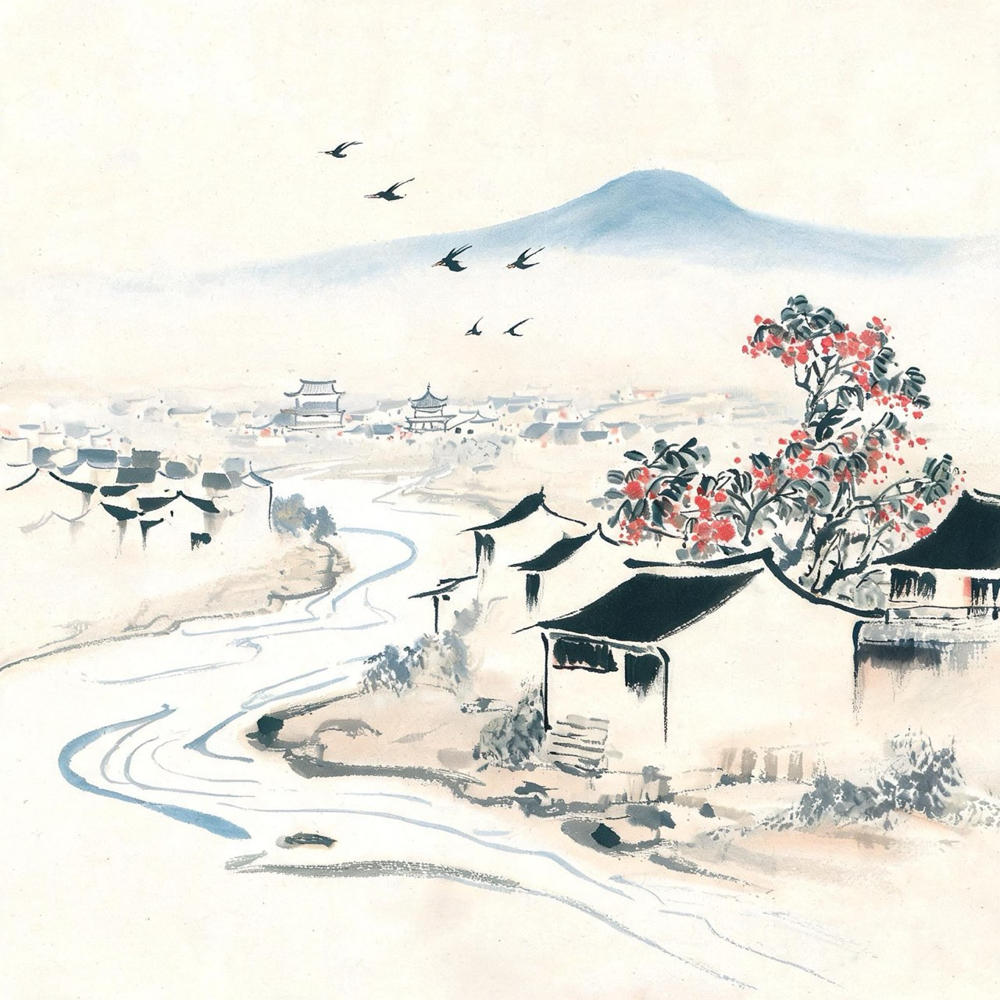
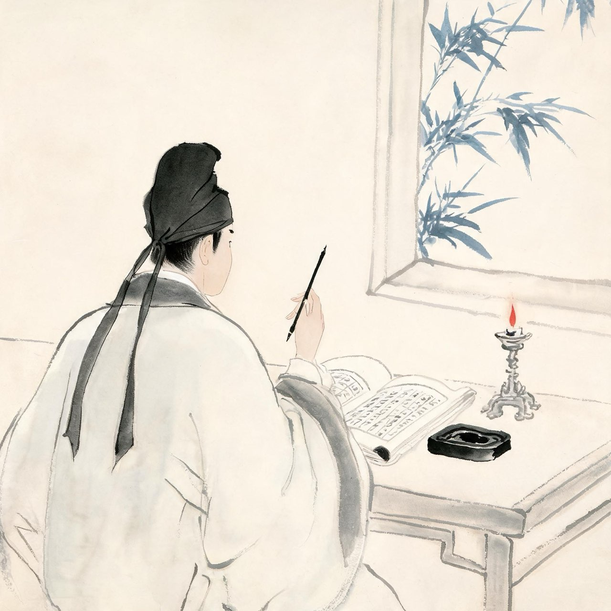
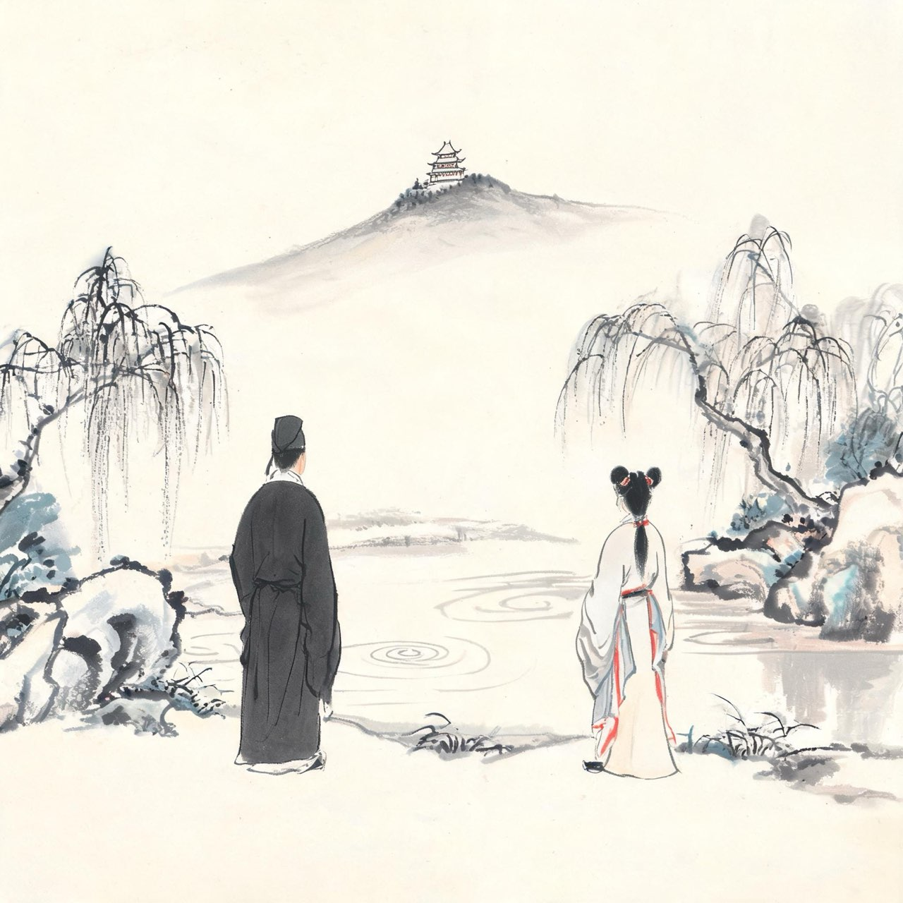

苏轼 · 1037-1056
眉州
蜀中少年

眉山钟灵
景祐三年十二月十九日，眉州眉山，一个男婴降生在苏家。
这里是蜀地西南的小城，岷江支流穿城而过，城中遍种荔枝、竹子与荷花。苏家不算大富，薄有田产，书香传家——祖父苏序宽厚好饮，父亲苏洵游荡任侠，二十七岁还没有静下心来读书。
谁也没想到，二十年后，这户人家将同时走出两个进士、一位文章宗师，天下称之为：三苏。
注
- 生于十二月十九，按公历已入 1037 年 1 月 8 日
- 苏洵二十七始发愤：出自欧阳修《苏明允墓志铭》，《三字经》苏老泉二十七即本此；苏洵自述则云二十五岁始知读书，两说并存
事件·名二子说
父亲苏洵为两个儿子取名，各有一篇深意。
长子名轼。轼是车厢前一根不起眼的扶手木——看似无用，车却离不得它。苏洵在《名二子说》里写道：不外饰者惟辙乎——次子名辙，车轮碾过的痕迹，功名祸福都轮不到它。
后来人们说，这两个名字像两份预言：一个锋芒毕露一生受累，一个沉静内敛处处避祸。
注
- 《名二子说》作年有庆历七年、至和二年等说
程夫人教读《范滂传》
少年苏轼跟着母亲程夫人读《后汉书》。
读到《范滂传》：东汉名士范滂受党锢之祸，赴死之际与母亲诀别，说不能尽孝了。范滂的母亲说：你与李杜齐名，死亦何恨——既已有好名声，又想长寿，是不能两全的。
苏轼放下书，问母亲：轼若为滂，夫人许之否乎？
程夫人答：汝能为滂，吾顾不能为滂母耶？
这一问一答，后来用了一辈子来践行。
注
- 范滂：东汉党锢之祸中殉道的名士，登车揽辔，慨然有澄清天下之志
- 教读年份为约数，史书未系年

少年狂气
少年的苏轼，天资高得让父亲都压不住。
传说他曾自书一联：识遍天下字，读尽人间书。后来有高人持书来问，他答不上来，羞愧之下，把对联各添两字——发愤识遍天下字，立志读尽人间书。
故事未必是真事，狂气是真的。他博览群书，好贾谊陆贽之文，论古今治乱，写出文章来，父亲看了自叹不如。
苏洵后来对人说：这个人呀，比我强。语气里一半是骄傲，一半是不放心。
注
- 识遍天下字联：民间传说，见宋人以来笔记杂说，非史实——借此可见少年狂气

结发王弗
至和元年，十九岁的苏轼娶了十六岁的王弗。
王弗是乡贡进士王方之女。民间传说两人结缘于中岩寺下的唤鱼池——老师出题命众人为一池碧水命名，众人所拟皆俗，苏轼题唤鱼池，掷笔之际，王弗的题笺恰好送来，也是唤鱼池。一池碧水，两心相印。
传说动人，真假难考。但王弗敏而静，婚后红袖添香，苏轼读书时她陪伴终日，他背不出的地方她轻声提醒——这是苏轼自己在文字里承认的贤内助。
注
- 唤鱼池联姻：地方传说，见于眉山青神一带方志与民间叙述，正史无载
出川
嘉祐元年，苏洵带着两个儿子进京赶考。
二十岁的苏轼第一次离开眉山。蜀道艰难，剑门关高耸，他回望了故乡一眼——这里有母亲、妻子和熟悉的江水。
这不是永别。此后他还会回来两次：一次是母亲病故奔丧，一次是扶父亲的灵柩还乡守孝。
但嘉祐元年的他没有料到，嘉祐四年之后再度出川，蜀地的山水，此生就只在梦里相见了。